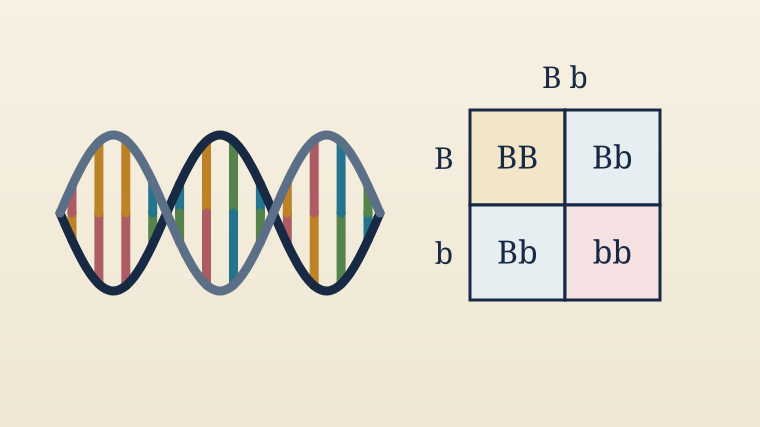

Year 10 BTEC Applied Science · Unit 1 · Learning aim A2
DNA and inheritance
Zoom from cell to DNA, pair the bases, explore mutations, then predict inheritance with Punnett squares.

Year 10 BTEC Applied Science · Unit 1 · Learning aim A2
Zoom from cell to DNA, pair the bases, explore mutations, then predict inheritance with Punnett squares.
